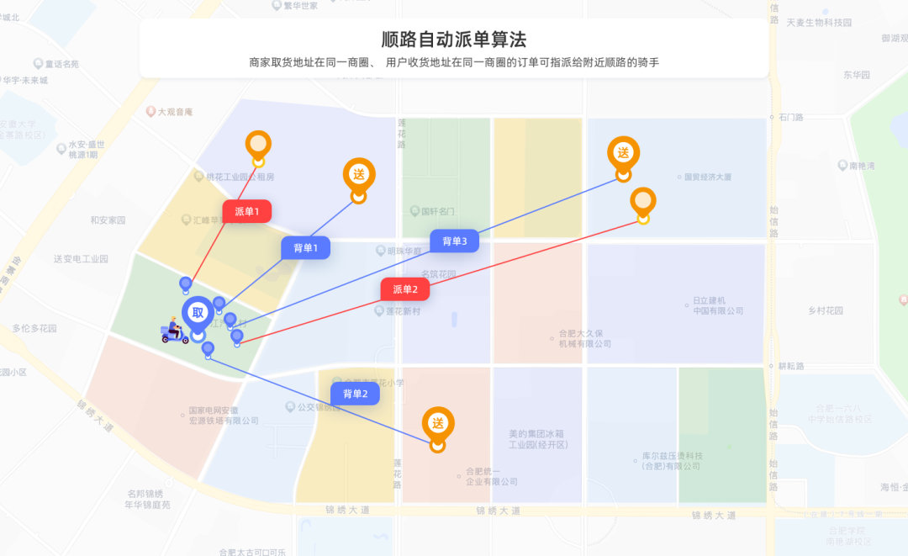
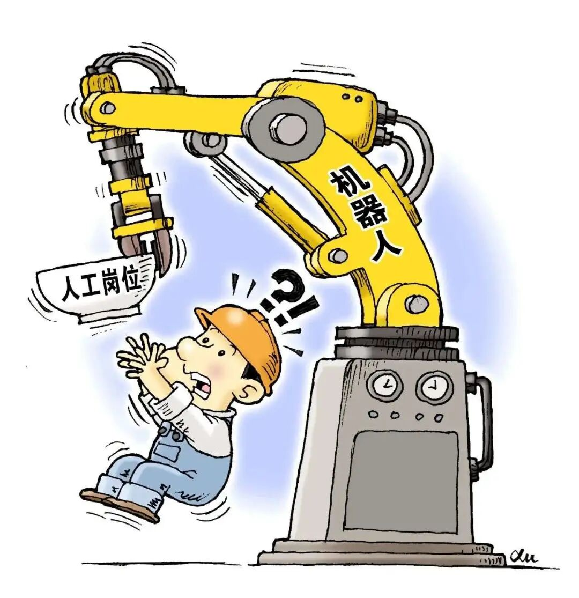

“ 全民基本收入为人类过上远离失业焦虑的生活提供了革命性的助力，它使得"无用"之人不必变得"有用"便可以享受人类本该无条件拥有的自由和尊严。
暴动的余烬：卢德分子与技术恐慌
1811年3月初, 英国诺丁汉地区一些愤怒的工人用暴力手段砸烂了几个工厂将近六十多台纺织机，这场暴动似乎很快就被平息了，工人的怨气也被以更暴力的手段镇压——但引发暴动的问题仍未得到解决，低工资、延长的工作时间、恶劣的工作环境以及相对于工资而言高昂的物价，每一根稻草都足以把温顺的无产阶级工人变成“暴力分子”。彼时正值工业革命的典型时期，这场运动被以工人们寄出的恐吓信签名“卢德”命名，成为历史上反对新技术、恐惧失业的标志性事件，而卢德分子在很长一段时间沦为了不适应新技术、以至被社会发展所淘汰的人的戏谑称呼。
图1 工业革命时期的“卢德分子”
这种污名化是对卢德运动过于片面、粗暴的总括，根据现有的研究将卢德运动分为新卢德派和老卢德派，其中我们所熟知的、也即上文所提到的老卢德派的反抗有其生存目的，暴力只是行动的显像，其内核和19世纪乃至20世纪的诸多劳工运动一样，本质上是为了谋求工作、工资和福利待遇——这也是为什么在E.P汤普森分析英国工人阶级的形成时将之归结于资本主义的矛盾问题而非普通的工业化问题。
事实上，新技术的进入带来的失业问题极容易激化社会矛盾，比起恶劣的劳动条件和低工资，完全被排除在劳动市场以外更令人难以忍受，尤其是在劳动保障更不健全的发展中国家，除了工业革命时期的例子以外，俄国、中国在劳资双方的矛盾抵达极点后以革命手段建立共产主义政权的实践，也充分说明了全球市场下新技术的冲击对发展中国家强烈的社会影响。这无一例外地印证着，失业的恐惧深深地印刻在人类的历史中，并且在每次技术迭代的时候都会如达摩克里斯之剑般高悬，而这种恐惧直到今日，被新一轮的技术革命所激发。
但正如每一次技术革命引发的问题都有相似性，21世纪人们的技术恐慌也和其祖先惊人地相似——那就是本质上对生存的担忧和对劳动条件的不满，以及更深层面上的，对工作意义的反思。
巨兽的胃囊：当技术开始消化人类
21世纪的首要技术哲学命题是技术是否即将取代人？技术在当代的含义已经和其最开始的形而上学意味脱钩，海德格尔所言“技术是真理的发生方式。”已经成为二十世纪中期对技术哲学意义上的玫瑰色幻想，现如今技术是冲突、矛盾、争议的场域，它意味着人类已经在一定程度上失去了对技术全部的掌控，如今技术对人的掌控已然体现在方方面面：外卖骑手根据算法的推算的接受派单、短视频软件精准地将你感兴趣的内容持续推送、人工智能在诸多领域“战胜”人类、等等。

图2 外卖骑手的自动派单机制
尽管在很多人的期待中，技术和人是紧密相连的关系——以一种正向的方式，但随着越来越多的行业在咄咄逼人的替代性技术中感到不安，技术变成了一只巨兽，以替代人类的方式吞噬着脆弱的人类，于是人们开始对技术“重估一切价值”，不仅针对在伦理上有待探讨的前沿技术，也包括在生活中使用广泛的日常技术，如移动支付等，甚至后者比前者更令人恐惧，因为它意味着很多工作已然被代替，人们在对前沿技术抱有怀疑的同时，突然惊觉四周的一切早已改变。
我们不去探讨技术对日常生活具体的微观改变，而是去认识到所有这一切技术危机都只是人类历史上生存脆弱性的重演——尽管表达方式各异，但人类的一具“肉身”既宣告了恐惧的必然性，也宣告了诸多解决方法的不可能。唯一有效且可能的是：打破区分“有用”“无用”人类的二元对立的方式是推行全民基本收入。
尽管随着技术的发展，人类的生活水平逐渐提高，医学进步让更多疾病不再致命、社会保障让人有一定能力应对生活中的不幸、人类的心理问题得到更多的重视……但正如西蒙娜·薇依所说：“人类的整个历史都是不断远离热水澡的过程。”热水澡意味着一种安心的舒适，远离热水澡是对我们看似稳定的生活中永不缺席的不确定性和风险最好的概述。这也就是人类的“肉身”所在，人的生存问题。就像人类恐惧失业，并不是热爱工作本身，而是恐惧无法生存，恐惧饥饿，恐惧居无定所，这些打远古以来最原始的恐惧依然牢固地扎根在人类身上。因此新技术只是激化而非创造了原有的矛盾，要解决新技术带来的问题，要从如何进一步确保人类的生存入手。
这里或许会有疑问，为什么要采取整体而非局部的手段去解决具体的问题？为何不能回归问题本身——让更多人就业来缓解对失业的恐惧？这些问题是极其有意义的，首先，整体的解决方法未必比起小修小补要消耗无法承担的成本；其次让更多人就业的手段未必是无痛的，也未必是被技术发展所允许的，例如很多人认为可以通过将原本服务于某产业的工人转移至更高端的产业来维持就业，但正如收银员无法一夜之间学会编程，产业转移过程中的摩擦对于工人来说是非常严峻的，更何况在欠缺劳动保障的发展中国家，失业并不意味着领取一笔救济金，而是意味着全家的困顿；最后必须要考虑分配问题，不同产业从业者的议价能力是不一样的，转换职业不仅需要国家提供职业教育，也需要个体面对资方进行谈判，就如同在研究二十世纪三十年代的上海罢工时，裴宜理对技术性和非技术性工人家庭收入的分析：总的来说技术工人由于其技术短时间内难以被取代，因此在劳资谈判中更容易获得优势，而非技术性工人由于其城市劳动力的后备资源十分充足，因此资方在谈判的时候也更为强硬，使非技术性工人更容易遭到解雇。这使得从事低端行业的工人只能平移到新兴产业的低端领域，就算受到培训也只是暂时拥有了获得工作的机会，但总体来说还是要面临随时被解雇的风险。

图3 机器人代替工人岗位
如果仅仅将一个人能否在劳动力市场站稳脚跟看作“有用”“无用”的标准，那么比起让“无用”的人暂时性地变得“有用”且随时会变得“无用”并承受财务危机，不如让“有用”“无用”的人都能在社会中保障基本的生活水平，不必随时生活在变得“无用”也即失业的恐惧中。
分食未来：全民基本收入与人的归宿
在这个问题上，全民基本收入是值得关注的解决方案。
2017年，芬兰开展了欧洲首个由国家支持的无限制发放基本收入的试验，该试验由芬兰社会保险局负责，为期两年，预算2000万欧元，做法是随机抽取的2000名未就业的25-58岁市民，提供每人每月560欧元（约合4280元人民币）。这些资金可以自由使用，无需报告用途；无独有偶，2020年美国总统选举民主党初选候选人杨安泽(Andrew Yang) 主张“自由分红”，即政府无条件给全国所有人每人每月发放1000美元，这笔资金可以给予人们基本的财务支持，来面对不确定性，并且削弱人在被迫劳作时的无意义感。
图4 芬兰社会福利机制
这些政策旨在促进经济平等、完善社会保障和削弱福利机构的官僚化，比起传统的社会保障制度，全民基本收入在很多层面上都是一场彻底的革新，例如它打破了领取救济金人群的“就业两难”——如果找到工作就意味着失去救济金，找到工作有可能再度失业，且工资可能仅仅略高于救济金；更适应零工经济模式的福利安排，在零工经济时代下，用人单位倾向于和劳动力签订有条件的、短期用工合同，甚至采取劳务外包，这使得失业变为更平常的事情，原有的需要福利机构审核、过程繁琐的救济金模式显得效率极低且行政冗杂；它更有助于实现社会公平，基本收入让劳动者在劳资双方谈判时更有议价权，可以有效地降低失业的阵痛期，促使劳动者选择真正适合自己的工作，增加劳动者的自由选择权。
尽管全民基本收入也有其存在的问题，例如如何在预算约束下获得预期的资金、如何合理地提高税赋，使其更多降在富裕阶级头上，而不至于让中产阶级成为政策变动中的“输家”等问题，但是根据现有的研究，在严格的预算约束下首先在局部进行全民基本收入实验，然后在进行合理的税收规划后进行大范围的推广是较为可行的方案，而也有研究指出在芬兰的基本收入实验使得其参与者幸福感明显提高。
随着科技的进步，人类不仅要进行经济模式的改变，也有对原有的工作伦理进行反思和修改，正如斯科特、阿甘本等哲学家已经思考过的，当下人们越来越有动力思考“工作何为？”，技术对劳动力的大规模替代至少在一定概率上提供了技术代替人们劳作，而使人类过上马克思所谓的：“上午打猎，下午捕鱼，傍晚从事畜牧，晚饭后从事批判，但并不因此就使我成为一个猎人、渔夫、牧人或批判者。”的本真性生活。因此全民基本收入为人类过上远离失业焦虑的生活提供了革命性的助力，它使得“无用”之人不必变得“有用”便可以享受人类本该无条件拥有的自由和尊严。
参考文献
[^1]陈红兵,唐淑凤.新老卢德运动比较研究[J].科学技术与辩证法,2003(02):56-59.
[^2]刘军.E．P．汤普森阶级理论述评[J].世界历史,1996(02):81-89.
[^3]刘平.还原:工人运动与中国政治——裴宜理《上海罢工》述评[J].近代史研究,2003(03):224-248.
[^4]徐富海,顾天安.全民基本收入：社会福利制度的创新还是空想？[J].云南行政学院学报,2020,22(04):110-115.DOI:10.16273/j.cnki.53-1134/d.2020.04.018.
[^5]姚建华,徐偲骕.新“卢德运动”会出现吗?——人工智能与工作/后工作世界的未来[J].现代传播(中国传媒大学学报),2020,42(05):45-50.
[^6]万海远,李实,卢云鹤.全民基本收入理论与政策评介[J].经济学动态,2020(01):98-113.
[^7]赵柯,李刚.资本主义制度再平衡:全民基本收入的理念与实践[J].欧洲研究,2019,37(01):1-21+156.